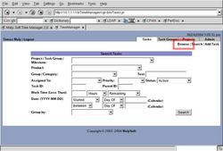

The task queue provides a list of tasks to let you know what you and your workers are working on as well as have waiting to work on.

- Getting to the task queue:
- View By User:
- Dependencies:
- Hours:
- Sorting:
- Default Sorting:
The task queue is available by clicking on the 'Browse' link from the Task Management Console. For the sake of speed, the task queue is not automatically opened when going to the Task Management Console (such as if you have a really large queue and just want to add a task, there are no delays).
The 'View By User' drop-down menu provides a way to specify whose task queue to show. The default should be 'myself', being your tasks. If you are a manager, you should see an entry for each manageable user, as well as an 'unassigned', for those tasks you have yet to assign (such as tasks you created), and an 'everyone' for all the people in the list.
The 'Dep' column will show an asterisk ('*') when the task contains dependencies or subtasks. Clicking on the asterisk will open up a window listing those dependencies/subtasks.
The 'Hrs' column displays the hours spent and the estimated hours, respectively. Loosely, this can show how far along in a task you are.
By clicking on any of the header names, you can sort the results by that column. Clicking on a column twice in a row will make the results descending.
The default sorting in the page is done first by the start date, then the due date, then the priority, then the status. If there is no due date/start date, it will show up first on the list.